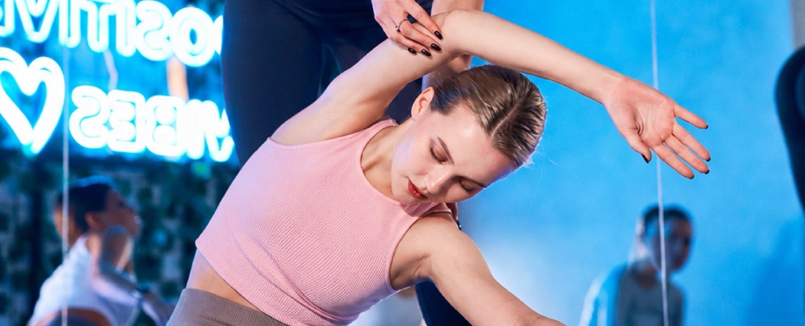

Фитнес для девушек · Краснодар
Стретчинг
Растяжка и подвижность
Записаться на пробное
Кому подойдёт
Если хотите развивать гибкость и уделить время растяжке.
Как проходит занятие
На тренировке прорабатывают разные группы мышц и подвижность суставов, постепенно увеличивая амплитуду движений.
Занятия в студиях
Северная, 324А
Уточните у администратора условия посещения и ограничения перед первым занятием.
1 Мая, 188
Описание · 1 Мая
Тренировка, для развития гибкости тела, увеличение эластичности мышц и подвижности суставов. Основным принципом является чередование кратковременного напряжения мышц с их расслаблением. Благодаря регулярным тренировкам по растяжке вы не только сможете в кратчайший срок сесть на шпагат, но и обретёте гибкость всех отделов вашего тела.
Противопоказания · 1 Мая
острые инфекционные и воспалительные заболевания, повышенная температура. Свежие травмы мышц, связок, сухожилий и суставов. Недавние операции и период реабилитации без разрешения врача. Острые боли в позвоночнике и суставах. Обострение заболеваний опорно-двигательного аппарата. Выраженная нестабильность суставов и позвоночника. Серьёзные сердечно-сосудистые заболевания, при которых противопоказана физическая нагрузка. Беременность. Любые состояния, при которых врач рекомендовал исключить упражнения на растяжку. Межпозвоночные грыжи и протрузии с выраженными симптомами. Гипермобильность суставов. Варикозное расширение вен с выраженными симптомами. Хронические заболевания позвоночника и суставов.
Трудовой Славы, 6
Описание · Трудовой Славы
Тренировка, направленная на развитие гибкости, увеличение амплитуды движений и улучшение эластичности мышц. В программе используются статические и динамические упражнения на растяжение основных групп мышц. Занятие помогает снять напряжение после физических нагрузок, улучшить подвижность суставов и сделать движения более свободными.
- Развитие гибкости и эластичности мышц;
- увеличение амплитуды движений;
- улучшение подвижности суставов;
- снятие мышечного напряжения;
- улучшение осанки и координации движений.
Одежда: удобная, эластичная спортивная форма, носки.
Противопоказания · Трудовой Славы
острые инфекционные и воспалительные заболевания, повышенная температура. Острые боли в мышцах и суставах. Недавние травмы, растяжения и операции без разрешения врача. Обострение заболеваний опорно-двигательного аппарата. Воспалительные процессы в суставах. Выраженный болевой синдром при движении. Межпозвоночные грыжи и протрузии с выраженной симптоматикой. Серьёзные сердечно-сосудистые заболевания.